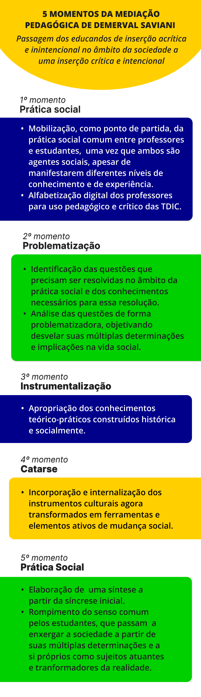

Possibilidades das relações entre cultura digital e EPT
É possível que você esteja esperando que seja trazido receitas para fazer isso, tanto no âmbito das práticas pedagógicas quanto em relação à gestão técnico-administrativa.

As relações que se estabelecem socialmente, tal qual a educação, são construídas a partir de princípios como a autonomia, a criticidade, a ética e o respeito às diferenças, dentre outros. Esses princípios irão embasar as relações se a intenção é promover uma educação transformadora, isto é, que vise à superação da desigualdade e da opressão.
Entretanto, ao invés de lhe oferecer modelos, instruções ou um tutorial, no que diz respeito à docência que objetiva a formação omnilateral e emancipadora de trabalhadores e trabalhadoras, posso lhe trazer elementos para refletirmos sobre o processo de ensino-aprendizagem na e para a cultura digital.
Para tanto, pedirei a ajuda do professor. Ele nos explica que o trabalho pedagógico consiste num trabalho de mediação que cria condições para a
“passagem dos educandos de uma inserção acrítica e inintencional no âmbito da sociedade a uma inserção crítica e intencional”
Esse trabalho de mediação, segundo o autor, desenrola-se em cinco momentos. Vejamos.
O primeiro momento consiste em tomar a prática social comum a professores e a estudantes como ponto de partida, uma vez que ambos são agentes sociais. Todavia, é importante considerar que, em virtude de seu conhecimento e da sua experiência, o posicionamento que estudantes e professores ocupam em relação à prática social é desigual neste momento. Assim, por não conseguirem prever os níveis de conhecimento e experiência dos estudantes para planejar sua atuação pedagógica, a compreensão do professor configura-se numa síntese precária.
Já os estudantes, embora tenham experiências e conhecimentos, sua condição de estudantes não lhes permite, ainda, articular a experiência pedagógica à prática social na qual estão inseridos.
Ao contextualizarmos o primeiro momento proposto por Saviani (2019, 2021), podemos considerar a cultura digital como o ponto de partida para o trabalho pedagógico na EPT. Nesse sentido, há uma diferença de posicionamento de professores e estudantes em relação aos conhecimentos e experiências como agentes da e na cultura digital. Isso ocorre não apenas porque têm níveis diversos de compreensão sobre as práticas sociais da e na cibercultura, como produtores, consumidores e disseminadores de informação, mas porque há nativos e imigrantes digitais entre estudantes da EPT e, também, entre professores que atuam na modalidade.
Desse modo, é importante que os professores se apropriem das tecnologias digitais, isto é, sejam alfabetizados e letrados digitalmente, para que possam, por um lado, fazer uso delas como recursos pedagógicos em suas aulas e, por outro lado, promover reflexões e formar trabalhadoras e trabalhadores para o uso crítico, ético e emancipatório no mundo do trabalho.
O segundo momento é a problematização, ou seja,
“detectar que questões precisam ser resolvidas no âmbito da prática social e, em consequência, que conhecimento é necessário dominar”.
Fazendo um paralelo com a cultura digital, esse é o momento para que temas relevantes na atualidade, como cyberbullying,, fake news, redes sociais, tecnologias digitais em si, entre inúmeros outros, sejam enfocados de maneira questionadora, isto é, com vistas a desvelar suas múltiplas determinações e implicações na vida social.
A partir daí, chegamos ao terceiro momento, a instrumentalização, isto é, a
“apropriação por parte dos estudantes dos instrumentos teóricos e práticos necessários ao equacionamento dos problemas detectados na prática social”.
É aqui que o professor entra com todo o seu conhecimento específico da área de formação para propiciar aos estudantes conceitos, teorias, técnicas, procedimentos, enfim, todo o arcabouço teórico-prático para apreender e intervir na realidade.
Essas intervenções na realidade podem incluir o próprio uso das tecnologias digitais como ferramentas. Por exemplo, a criação de blogues e sites, postagens de textos e vídeos em redes sociais, desenvolvimento de aplicativos e softwares etc.
Ao tratar da instrumentalização, Saviani (2021, p. 57) coloca, claramente, que os instrumentos teóricos e práticos resultam da produção histórica e social. Assim, sua apropriação pelos estudantes depende da “transmissão direta ou indireta por parte do professor”. Explicando melhor,
“o professor tanto pode transmiti-los diretamente como pode indicar os meios pelos quais a transmissão venha a se efetivar”.
Assim, se o objetivo é formar futuros trabalhadores que hajam crítica e eticamente na e para a cultura digital, é fundamental que os professores mobilizem e orientem a inteligência coletiva (Lévy, 2010, 2011), inserindo as tecnologias digitais no processo de ensino-aprendizagem e valorizando os saberes singulares de cada estudante.
“A expressão inteligência coletiva foi cunhada por Pierre Lévy [...] para designar uma inteligência distribuída em toda parte, que deve ser valorizada e coordenada, a fim de resultar na mobilização de competências. A noção de inteligência coletiva pressupõe a identificação das habilidades distribuídas em todos os indivíduos com o propósito de coordená-las por meio do emprego das tecnologias da informação e comunicação, para utilização em prol da coletividade nos planos cognitivo, social, político e econômico. Não se deve conceber a inteligência coletiva simplesmente como uma fusão de inteligências individuais, mas como uma revitalização das singularidades. A inteligência coletiva faz do saber a principal base para as relações humanas”. (Andretta; Pajeú, 2018, p. 367).
Para tanto, coadunam com a EPT no contexto da cultura digital
- “o planejamento, execução e avaliação de conteúdos educacionais que se apropriem de diferentes linguagens comunicacionais em uma construção multifacetada” (Montanaro, 2018, p. 207) na perspectiva da educação transmídia,
- escolha de estratégias metodológicas que propiciem maior envolvimento e que promovam a autonomia
- o compartilhamento de conhecimentos e o diálogo entre os estudantes.
Chegamos, então, ao quarto momento da mediação: a catarse,
“o ponto culminante do processo pedagógico, quando ocorre a efetiva incorporação dos instrumentos culturais, transformados em elementos ativos de transformação social”.
Por fim, o ponto de chegada é a própria prática social, porém compreendida, agora, de maneira qualitativamente diferente do ponto de partida, pois a inicial tornou-se síntese. Assim, os estudantes, apropriados dos conhecimentos teórico-práticos construídos socialmente pelo ser humano ao longo da História, rompem o senso comum, mudando sua visão de mundo, passando a enxergar a sociedade a partir de suas múltiplas determinações e a si próprios como sujeitos atuantes e transformadores da realidade.

Título: Os 5 momentos da mediação pedagógica de Demerval Saviani
Elaboração: Prosa (2024).